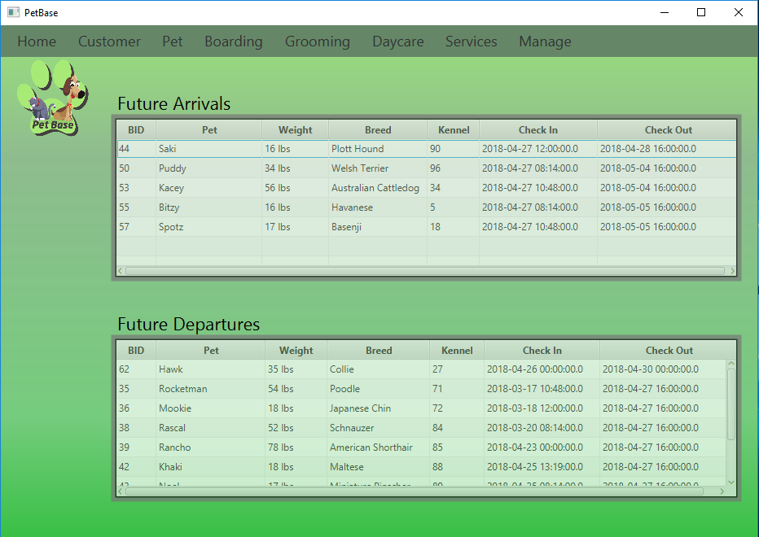

Portfolio
Relevant Coursework
Database Management
The Database Management Course involved a final project which spanned over the course of two semesters. In the first semester students were asked to find a local area business and complete a systems analysis of the business using various SDLC methods. The students were then asked to propose a systems design which would help the business generate $50,000 of income over the course of the next five years. My team chose Paws Pet Resort, a local area pet daycare, boarding, and grooming establishment. The second semester focused on the creation and implementation of our solution. In our case this involved creating a database using Microsoft SQL Server 2017 Enterprise Edition which would store customer and pet information to facilitate the record keeping of the establishment. We also created a Java GUI to allow end user interaction with the database. I held the role of the primary coder/tester for the application. While the project has been completed, I am currently working on recreating the database in PostgreSQL and recreating the Java GUI using the Spring framework.
IS Infrastructure and Networks
The infrastructure and networks course focused primarily on Internet protocols, and the technologies and strategies used to develop various network types. Students covered topics such as different networking mediums, various networking architecture models, and wireless internet and the security issues that come with it. In addition, students were also asked to reflect on the Internet of Things and how it will affect Information Technology in the future in the new new thing.
Internet Application Development
The purpose of the Internet Applications Development course is to familiarize students with web development. The course included various exercises from Codecademy, w3schools, and the new boston. The four modules covered subjects such as HTML/CSS, PHP, MySql, and Javascript. In addition, students were asked to create a simple website to document completion of assignments as well as demonstrate a working knowledge of the class material.
Self Study
Codecademy Intensive
Participated in a Codecademy course aimed at familiarizing students with React. The final project was a web app called jammming, which connected to the Spotify API and allowed a user to search songs, add them to a playlist, and then save the playlist to their Spotify account. In addition, I also wrote a feature request to add additional functionaly to the project and then implemented it. The functionality I added included showing whether a song had explicit content, showing the track length of songs, and showing a track preview if it was provided by the Spotify API.
Free Code Camp Challenges
I have also been working through Free Code Camp's Responsive Web Design Course. I have embeded some of my work from there below which includes a tribute web site and a survey web form